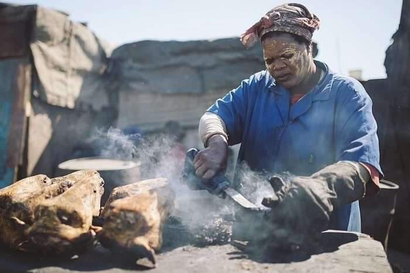

Skop/Smiley/Sheep's head

Smiley which is also known as Skop or Sheep's head is a street delicay. It is mostly enjoyed by South African men. It's boiled for until it becomes sticky and soft and minimal salt/spices are used. It is often paired with uphuthu.
Ingredients
- 1 sheep's head
- Salt/Cube or stock powder
- Barbeque spice
- Oil rubbing
Preparation
- Boil sheep’s head in salty water or water with stock cube until soft.
- When soft, take out of the cooking water, rub with barbeque spice and a little bit of oil.
- Put in preheated oven and cook at 170۫C for 15 minutes.
- It will be golden brown and crispy when ready to serve.
- Serve with pap/uphuthu, fried cabbage and some gravy.
- For Gravy: Sauté onion in a little oil.
- Add a bit of the sheep's head broth
Enjoy!